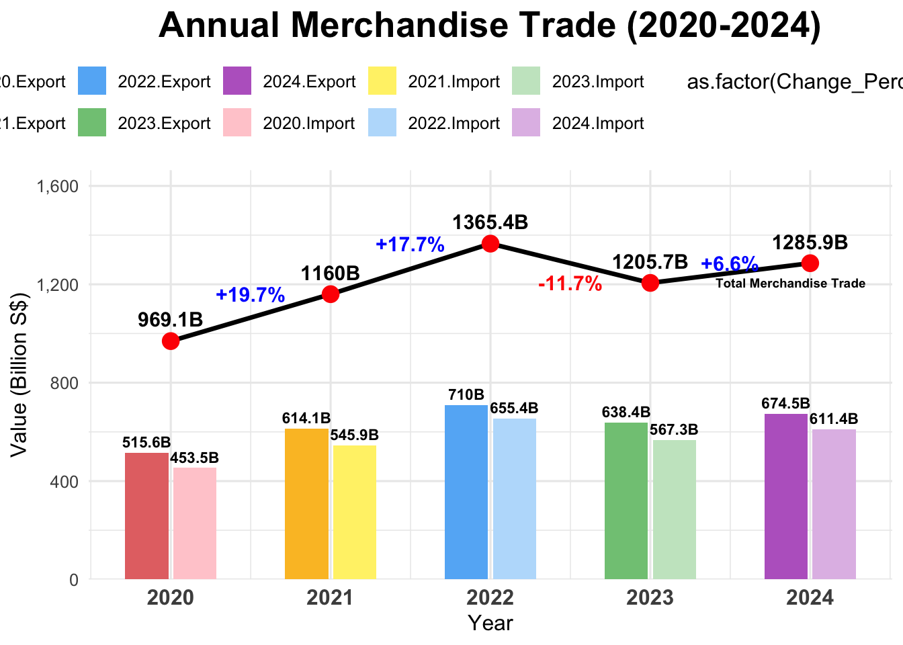

pacman::p_load(readxl, gifski, gapminder,
plotly, gganimate,tidyverse, CGPfunctions, ggHoriPlot, tsibble, readxl, feasts, fable, seasonal, scales)TakeHome_Ex02
Get Starting
Data Preparation
Import Data
This code imports three datasets from an Excel file named “Trade_Region_Market.xlsx”, each from a different sheet:
“T1” →
import_m: Contains import data“T2” →
export_m: Contains export data“T3” →
re_export_m: Contains re-export data
The skip = 10 parameter ensures that the first 10 rows are skipped, likely to remove headers or metadata, keeping only the relevant data.
import_m <- read_excel("data/Trade_Region_Market.xlsx", sheet = "T1", skip = 10)
export_m <- read_excel("data/Trade_Region_Market.xlsx", sheet = "T2", skip = 10)
re_export_m <- read_excel("data/Trade_Region_Market.xlsx", sheet = "T3", skip = 10)Reshaping and Formatting Export/Import Data
Pivoting Data:
Converts the dataset from a wide format to a long format using
pivot_longer().Keeps the “Data Series” column unchanged.
Transforms all other columns (representing months and years) into two new columns:
"Month_Year"→ Contains the original column names (e.g., “2023 Jan”)."Export_Value"→ Stores the corresponding numerical export values.
Date Conversion:
- Uses
yearmonth(Month_Year)to convert the"Month_Year"column into a proper date format, ensuring it is recognized as a year-month object.
- Uses
export_long <- export_m %>%
pivot_longer(cols = -`Data Series`, names_to = "Month_Year", values_to = "Export_Value") %>%
mutate(Date = yearmonth(Month_Year)) %>%
select(`Data Series`, Date, Export_Value)import_long <- import_m %>%
pivot_longer(cols = -`Data Series`, names_to = "Month_Year", values_to = "Import_Value") %>%
mutate(Date = yearmonth(Month_Year)) %>%
select(`Data Series`, Date, Import_Value) colnames(import_m)
colnames(export_m)
colnames(re_export_m)TOTAL MERCHANDISE TRADE AT CURRENT PRICES, 2020 - 2024
Export
This code calculates total exports by summing direct exports and re-exports for each year from 2020 to 2024:
Extract & Aggregate Data:
Converts
export_mandre_export_minto long format.Filters “Total All Markets” and extracts the year (
YYYY).Aggregates Annual Export and Annual Re-Export separately.
Compute Total Exports:
Merges exports and re-exports using
left_join().Calculates Total Export as:
Total Export=Annual Export+Annual Re-Export
# 計算 Export 年度總和
export_summary <- export_m %>%
pivot_longer(cols = -`Data Series`, names_to = "Month_Year", values_to = "Export_Value") %>%
filter(`Data Series` == "Total All Markets") %>% # 只選擇 "Total All Markets"
mutate(Year = as.integer(substr(Month_Year, 1, 4))) %>% # 擷取 "YYYY" 為年份
filter(Year >= 2020 & Year <= 2024) %>%
group_by(Year) %>%
summarise(Annual_Export = sum(Export_Value, na.rm = TRUE)) %>% # 每年加總
arrange(Year)
# 計算 Re-Export 年度總和
reexport_summary <- re_export_m %>%
pivot_longer(cols = -`Data Series`, names_to = "Month_Year", values_to = "ReExport_Value") %>%
filter(`Data Series` == "Total All Markets") %>% # 只選擇 "Total All Markets"
mutate(Year = as.integer(substr(Month_Year, 1, 4))) %>% # 擷取 "YYYY" 為年份
filter(Year >= 2020 & Year <= 2024) %>%
group_by(Year) %>%
summarise(Annual_ReExport = sum(ReExport_Value, na.rm = TRUE)) %>% # 每年加總
arrange(Year)
# 合併 Export + Re-Export
export_total_summary <- export_summary %>%
left_join(reexport_summary, by = "Year") %>%
mutate(Total_Export = Annual_Export + Annual_ReExport) # 計算總出口
print(export_total_summary) # 確保結果正確# A tibble: 5 × 4
Year Annual_Export Annual_ReExport Total_Export
<int> <dbl> <dbl> <dbl>
1 2020 234450. 281195. 515645.
2 2021 278975. 335106. 614081
3 2022 329669. 380298. 709967.
4 2023 285053. 353351. 638403.
5 2024 286598. 387907. 674505 Import
import_summary <- import_m %>%
pivot_longer(cols = -`Data Series`, names_to = "Month_Year", values_to = "Import_Value") %>%
filter(`Data Series` == "Total All Markets") %>% # 這裡要加 `%>%`
mutate(Year = as.integer(substr(Month_Year, 1, 4))) %>% # 確保 Year 正確提取
filter(Year >= 2020 & Year <= 2024) %>%
group_by(Year) %>%
summarise(Annual_Import = sum(Import_Value, na.rm = TRUE)) %>%
arrange(Year)
print(import_summary)# A tibble: 5 × 2
Year Annual_Import
<int> <dbl>
1 2020 453467.
2 2021 545882.
3 2022 655436
4 2023 567319.
5 2024 611360.Combine both Export and Import Data
To analyze total merchandise trade, both export and import data need to be combined. This process ensures a comprehensive view of trade activities over the years.
Merge Export and Import Data
The annual export and import summaries are combined using
bind_rows().A new column “Type” is added to distinguish exports from imports.
combined_summary <- export_total_summary %>%
rename(Value = Total_Export) %>%
mutate(Type = "Export") %>%
bind_rows(
import_summary %>%
rename(Value = Annual_Import) %>%
mutate(Type = "Import")
)
print(combined_summary) # 確保數據正確# A tibble: 10 × 5
Year Annual_Export Annual_ReExport Value Type
<int> <dbl> <dbl> <dbl> <chr>
1 2020 234450. 281195. 515645. Export
2 2021 278975. 335106. 614081 Export
3 2022 329669. 380298. 709967. Export
4 2023 285053. 353351. 638403. Export
5 2024 286598. 387907. 674505 Export
6 2020 NA NA 453467. Import
7 2021 NA NA 545882. Import
8 2022 NA NA 655436 Import
9 2023 NA NA 567319. Import
10 2024 NA NA 611360. ImportVisualizing Total Merchandise Trade
Steps in the Calculation:
Group by Year → Aggregates trade data on a yearly basis.
Sum Export & Import Values → Computes
Total_Tradeas the sum of both.Arrange by Year → Ensures chronological order for accurate trend analysis.
Print the Data → Verifies that the calculations are correct.
# 計算 2024 年的 Total Merchandise Trade
trade_summary <- combined_summary %>%
group_by(Year) %>%
summarise(Total_Trade = sum(Value, na.rm = TRUE)) %>%
arrange(Year)
print(trade_summary) # 確保數據正確# A tibble: 5 × 2
Year Total_Trade
<int> <dbl>
1 2020 969112.
2 2021 1159963.
3 2022 1365403.
4 2023 1205723.
5 2024 1285864.total_trade_summary <- trade_summary %>%
arrange(Year) %>% # 確保年份是遞增排序
mutate(Change = Total_Trade - lag(Total_Trade), # 計算變化值
Change_Perc = round(100 * (Total_Trade - lag(Total_Trade)) / lag(Total_Trade), 1)) # 計算變化率（%）ggplot(combined_summary, aes(x = Year, y = Value, fill = interaction(Year, Type))) +
geom_col(width = 0.6, position = position_dodge2(preserve = "single")) + # Import & Export 並排
geom_text(aes(label = paste0(round(Value / 1000, 1), "B")),
position = position_dodge2(width = 0.6), vjust = -0.5, size = 3, color = "black", fontface = "bold") +
# 折線圖：顯示 Total Merchandise Trade
geom_line(data = total_trade_summary, aes(x = Year, y = Total_Trade, group = 1),
color = "black", size = 1.2, linetype = "solid", inherit.aes = FALSE) +
geom_point(data = total_trade_summary, aes(x = Year, y = Total_Trade),
size = 4, color = "red", inherit.aes = FALSE) +
geom_text(data = total_trade_summary, aes(x = Year, y = Total_Trade,
label = paste0(round(Total_Trade / 1000, 1), "B")),
vjust = -1, size = 4, fontface = "bold", color = "black", inherit.aes = FALSE) +
# 在折線圖上標示變化值和變化率（不標第一年）
geom_text(data = total_trade_summary %>% filter(!is.na(Change_Perc)),
aes(x = Year - 0.5, y = Total_Trade + 50,
label = paste0(ifelse(Change_Perc >= 0, "+", ""), Change_Perc, "%"),
color = as.factor(Change_Perc >= 0)), # 確保顏色設定
size = 4, fontface = "bold", inherit.aes = FALSE) +
# **手動設定顏色：上升綠色，下降紅色**
scale_color_manual(values = c("TRUE" = "blue", "FALSE" = "red")) +
# 縮小 "Total Merchandise Trade" 標籤大小，並調整位置
annotate("text", x = 2022, y = max(total_trade_summary$Total_Trade) * 1.06,
label = "Total Merchandise Trade", size = 2.5, fontface = "bold", hjust = -1.5, vjust = 7, color = "black") +
theme_minimal(base_size = 12) +
labs(title = "Annual Merchandise Trade (2020-2024)",
x = "Year", y = "Value (Billion S$)", fill = "Trade Type") +
scale_x_continuous(breaks = seq(2020, 2024, 1)) + # 確保年份顯示正確
scale_y_continuous(labels = comma_format(scale = 1/1000), expand = expansion(mult = c(0, 0.15))) +
scale_fill_manual(values = c("2020.Export" = "#E57373",
"2020.Import" = "#FFCDD2",
"2021.Export" = "#FBC02D",
"2021.Import" = "#FFF176",
"2022.Export" = "#64B5F6",
"2022.Import" = "#BBDEFB",
"2023.Export" = "#81C784",
"2023.Import" = "#C8E6C9",
"2024.Export" = "#BA68C8",
"2024.Import" = "#E1BEE7")) +
theme(
plot.title = element_text(face = "bold", hjust = 0.5, size = 20),
axis.text.x = element_text(face = "bold", size = 12),
legend.position = "top"
)
The updated version presents several key enhancements over the previous visualization :
More Informative Representation
- Added a line chart to track Total Merchandise Trade, making overall trade trends clearer.
- Percentage change labels highlight year-over-year growth and decline, making trade fluctuations more intuitive.
Better Data Clarity & Comparison
- Side-by-side bar charts for exports and imports, allowing for an easy trade balance comparison.
- Distinct colors differentiate trade types while maintaining clarity.
Enhanced Readability
Larger and bold labels for key figures (e.g., total trade values).
Color-coded percentage changes (blue for growth, red for decline) improve quick interpretation.
EXPORTS OF SERVICES BY SERVICES CATEGORY, 2024
services_data <- read_excel("Data/Trade in Services.xlsx", sheet = "T1", skip = 10)services_2024 <- services_data %>%
select(`Data Series`, `2024`) %>% # 只選擇「類別名稱」和「2024 年值」
rename(Category = `Data Series`, Value = `2024`) # 重新命名欄位Select Categories
# 定義你要的類別
selected_categories <- c(
"Manufacturing Services On Physical Inputs Owned By Others",
"Maintenance And Repair Services",
"Transport",
"Travel",
"Insurance",
"Government Goods And Services",
"Construction",
"Financial",
"Telecommunications, Computer & Information",
"Charges For The Use Of Intellectual Property",
"Personal, Cultural And Recreational",
"Other Business Services"
)
# 過濾指定的類別
filtered_services <- services_2024 %>%
filter(Category %in% selected_categories) %>%
drop_na() %>% # 移除 NA 值
filter(Value > 0) # 移除數值為 0 的行
# 查看數據
print(filtered_services)# A tibble: 24 × 2
Category Value
<chr> <dbl>
1 Manufacturing Services On Physical Inputs Owned By Others 471
2 Maintenance And Repair Services 10820.
3 Transport 172971.
4 Travel 31867.
5 Insurance 12650.
6 Government Goods And Services 477.
7 Construction 2101.
8 Financial 71583.
9 Telecommunications, Computer & Information 41150.
10 Charges For The Use Of Intellectual Property 26256.
# ℹ 14 more rows# 使用 `group_by()` 讓 R 自動給相同的類別編號
selected_categories_NEW <- filtered_services %>%
group_by(Category) %>%
mutate(Row_Number = row_number()) %>% # 每個類別的出現順序
ungroup() %>%
mutate(Type = ifelse(Row_Number == 1, "Export", "Import")) %>% # 第一個當作 Export，第二個當作 Import
select(-Row_Number) # 移除輔助欄位
print(selected_categories_NEW)# A tibble: 24 × 3
Category Value Type
<chr> <dbl> <chr>
1 Manufacturing Services On Physical Inputs Owned By Others 471 Export
2 Maintenance And Repair Services 10820. Export
3 Transport 172971. Export
4 Travel 31867. Export
5 Insurance 12650. Export
6 Government Goods And Services 477. Export
7 Construction 2101. Export
8 Financial 71583. Export
9 Telecommunications, Computer & Information 41150. Export
10 Charges For The Use Of Intellectual Property 26256. Export
# ℹ 14 more rowsselected_categories_NEW <- selected_categories_NEW %>%
mutate(Value = Value / 1000)
# 拆分 Export 和 Import 數據
export_data <- selected_categories_NEW %>% filter(Type == "Export")
import_data <- selected_categories_NEW %>% filter(Type == "Import")Export
Import
colors_export <- c("#1f77b4", "#ff7f0e", "#9467bd", "#d62728", "#2ca02c", "#8c564b", "#e377c2", "#7f7f7f","#6C3365", "#408080")
colors_import <- c("#17becf", "#ffbb78", "#c5b0d5" , "#ff9896","#98df8a", "#c49c94", "#f7b6d2", "#c7c7c7","#C07AB8", "#95CACA")
# Export 的圓餅圖
export_pie <- plot_ly(export_data, labels = ~Category, values = ~Value, type = 'pie',
textinfo = 'label+percent', hoverinfo = 'label+value+percent',
marker = list(colors = colors_export), hole = 0.2) %>%
layout(title = "Exports of Services (2024)")
# Import 的圓餅圖
import_pie <- plot_ly(import_data, labels = ~Category, values = ~Value, type = 'pie',
textinfo = 'label+percent', hoverinfo = 'label+value+percent',
marker = list(colors = colors_export), hole = 0.2) %>%
layout(title = "Imports of Services (2024)")
# 顯示兩個圖
export_pieimport_pieThe updated version presents several key enhancements over the previous visualization :
Interactive & Dynamic – Hover to see exact values, zoom & pan for better exploration.
Clearer Labels – Only major segments display labels, reducing clutter.
Better Color Differentiation – High-contrast colors make categories easier to distinguish.